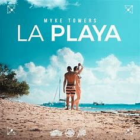
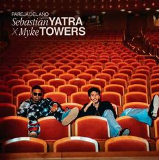

CURIOSIDADES
Myke Towers es un artista con una vida un tanto curiosa así que aquí te dejo algunas curiosidades para que puedas llegar a conocerlo tan bien como un verdadero fanático
- Al inicio de su carrera se hacía llamar “Mike Towers”, pero en 2017 cambió su nombre artístico a “Myke Towers”.
- Su voz es baritona.
- El álbum “Easy Money Baby” alcanzó el puesto número uno en el Top Latin Albums durante 83 semanas consecutivas.
- Tiene 30 millones de oyentes al mes en Spotify.
- Estudió una carrera universitaria durante dos años, hasta que finalmente decidió abandonarla para dedicarse de lleno a la música.
- También ha recibido el apodo de “El Young King”.
- Grabó su primer canción cuando tenía catorce años.
- Mide 1,83 metros de altura y pesa 80 kilogramos.
- Durante 2019 se posiciono en el top20 de las canciones más vendidas de España con le tema “La Playa”.
- Alcanzo la fama mundial con el tema “Si se da” que interpretó junto a Farruko, el tema acumula hasta la fecha más de 160 millones de reproducciones.
- Colaboró con Sebastián Yatra en el tema “Pareja del año”, el cual entró al “Top 10 de Billboard”.
|
 |
 |
 |
| Si Se Da |
La Playa |
Pareja del año |